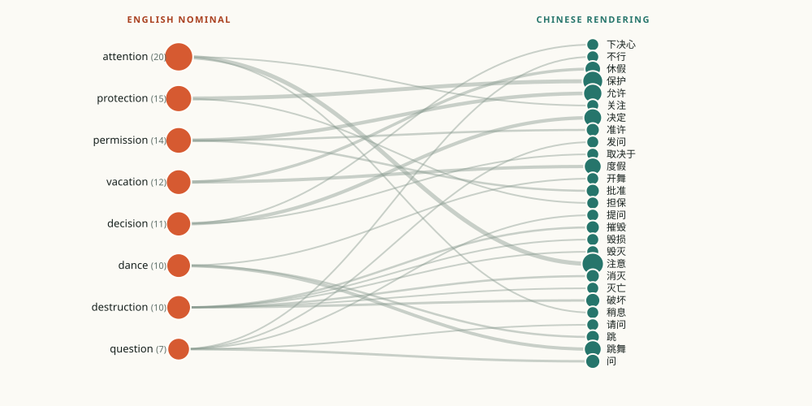

01
Origin
I chose this topic because it makes a familiar translation intuition visible: English often packages an action as a noun, while Chinese more readily expresses that action as a verb. The NV Atlas project supplied a useful bridge between the two languages by pairing an English nominalization with the Chinese verb used in the same subtitle line.
The existing CSV already contained 500 pairs, but the assignment asks for a traceable, reproducible sample. I therefore treated the public NV Atlas search index as the sampling frame and rebuilt the sample from its underlying sentence records rather than presenting the first 500 rows as representative.
02
Background
The topic sits between morphology and translation strategy. Nominalization turns a process into an entity: decide becomes decision, and protect becomes protection. Chinese can also nominalize, but subtitle dialogue often favors compact verb phrases such as 决定 and 保护 because they fit the rhythm of spoken exchange.
NV Atlas frames this as English nominalization versus Chinese verbal usage. Its public corpus is derived from OpenSubtitles v2024, an English–Simplified Chinese parallel subtitle collection. That makes it possible to ask a narrow question with observable data: when the same English nominal recurs, does Chinese keep a stable equivalent or choose a different verb for the situation?
03
Gap
Most learner-facing examples show a single “correct” equivalent: permission = 允许, protection = 保护. That presentation hides variation. A translator also needs to know whether a rendering is compact, expanded, or absent, and whether the surrounding dialogue changes the choice.
Existing atlas interfaces are powerful, but they are designed for broad exploration rather than a small assignment with an explicit sampling audit. This project fills that gap by combining a fixed-seed corpus, a compact bilingual codebook, linked views, and a visible distinction between machine matching and human verification.
04
Questions
- Which English nominalizations recur most often in the sample, and how many Chinese renderings do they receive?
- Do the five semantic categories favor compact verbs or expanded verbal phrases?
- How often does the nominal’s term disappear from the Chinese sentence, and what does that imply for term-level analysis?
- Can a reproducible sample and transparent interface make the uncertainty easier to see?
05
Method
The sampling frame was the embedded public index on the NV Atlas search page, retrieved on 5 November 2026. It contains 20,965 unique sentence pairs. I applied the following eligibility rules before sampling: both sides non-empty; a sentence ID present; English contains a Latin letter; Chinese contains a Han character; English length 10–240 characters; Chinese length 1–240 characters; and no exact duplicate source–target pair. This produced 20,785 eligible records; 178 were rejected for English length and 2 for Chinese length.
I used Python’s random.Random(2026).sample over the eligible list and selected one NV Atlas term pair from each sampled sentence. The result is 500 entries, each retaining its original sentence ID and a direct source URL. Random sampling avoids choosing examples for rhetorical convenience, but it does not guarantee proportional representation across genres or films; the public index does not expose enough metadata for that claim.
Codebook test and change log
I first tested a four-category scheme: institutional regulation, speech/cognition, state/relation, and material action. The pilot showed that a suffix rule over-classified concrete event nouns. For example, dance was being treated as an abstract relation even though it names an embodied activity. I revised the scheme to five categories, moved affect and embodiment into their own group, used an explicit override list for concrete events, and added a boundary rule: institutional use takes priority, then speech/cognition, then affect/embodiment, then social relation, then material action.
The category labels were assigned by deterministic rules on NV Atlas’s selected English nominal. They are an interpretive first pass, not a claim that every row has been manually adjudicated. The accompanying 50-row review queue was selected with the same seed for a later human spot check.
Human verification status
All 500 rows are marked human_checked = no. This is deliberate: the build can verify that each row matches the public index, but it cannot substitute for a person comparing the row with the original subtitle record. The site must not present machine matching as human checking.
To complete the assignment’s quality check, open data/verification-sample.csv, compare each of the 50 rows with its source URL, correct any mismatch, and set both the main corpus and the review file to human_checked = yes for verified entries. The report currently reports zero human-verified rows, zero claimed corrections, and a limitation rather than a fabricated result.
06
Analysis
Term network. The network asks which source terms travel to more than one Chinese rendering. In the unfiltered 500-row view, 244 distinct English nominals map to 314 distinct Chinese terms. The most frequent nominal, attention (20 rows), has three renderings: 注意, 稍息, and 关注. Destruction (10 rows) is more dispersed, with six renderings: 破坏, 摧毁, 消灭, 毁灭, 灭亡, and 毁损. This is the central pattern: a shared English nominal does not imply a fixed Chinese equivalent.

Category × verb form heat map. Compact Chinese verbs dominate almost every category: 495 of 500 term pairs have a target term of one or two Han characters, while only five use an expanded phrase. The heat map is therefore a check on a plausible but weak hypothesis. It does not show that category causes compactness; it shows that the current term inventory is highly compressed and that expanded verbalization is rare in this sample.
Bilingual KWIC. The KWIC view asks how the nominal behaves in context. It exposes two problems that a simple bilingual list hides. First, the selected target term may not appear literally in the Chinese sentence; the term inventory sometimes records a broader translation relation. Second, dialogue context can change the verb even when the English noun is identical. Clicking a highlighted term carries the term into the search field and the URL, which makes a specific observation shareable.
Corpus table. The table asks which individual rows support the patterns in the charts. Sorting, search, category/status filters, and CSV export operate on the same filtered collection. The table is not a decorative appendix: it makes every chart number inspectable and preserves the original sentence ID for tracing.
Main finding
Recurrence is not stability
Frequent English nominalizations recur across the corpus, but their Chinese renderings vary with context. A corpus explorer should therefore show distribution and co-text, not just a single dictionary-style equivalent.
07
Conclusion
The project achieved a working static corpus explorer with 500 traceable entries, search, two required filters plus a sensitivity filter, three linked visualization families, a sortable/exportable data grid, a bilingual interface, and a published codebook. The main analytical result is that recurrent English nominalizations are translated with variable Chinese verbs rather than stable one-to-one equivalents.
The conclusion should remain modest. The sample is drawn from a public index whose genre and translator metadata are not exposed, so the study cannot attribute variation to a specific translator, film, or period. It also cannot claim that every term relation is semantically exact. What it can show is a reproducible distribution and a method for checking individual cases against source records.
08
Reflection
The hardest part was not drawing a chart; it was resisting the temptation to make a cleaner story than the data supports. The original CSV looked complete until the required fields, sampling method, and human-check distinction were considered. Rebuilding the sample exposed how easily a plausible dataset can drift from the assignment’s evidentiary standards.
I learned to treat AI output as a draft that needs source-level inspection. A useful prompt was to ask for a reproducible build that records every filter and rejection count, and another was to ask for the interface to distinguish machine matching from human checking. AI was effective at generating code, organizing the report, and producing a first-pass taxonomy; it could not perform the required human spot check, decide subtle category boundaries with full confidence, or verify the copyright status of the underlying subtitle collection.